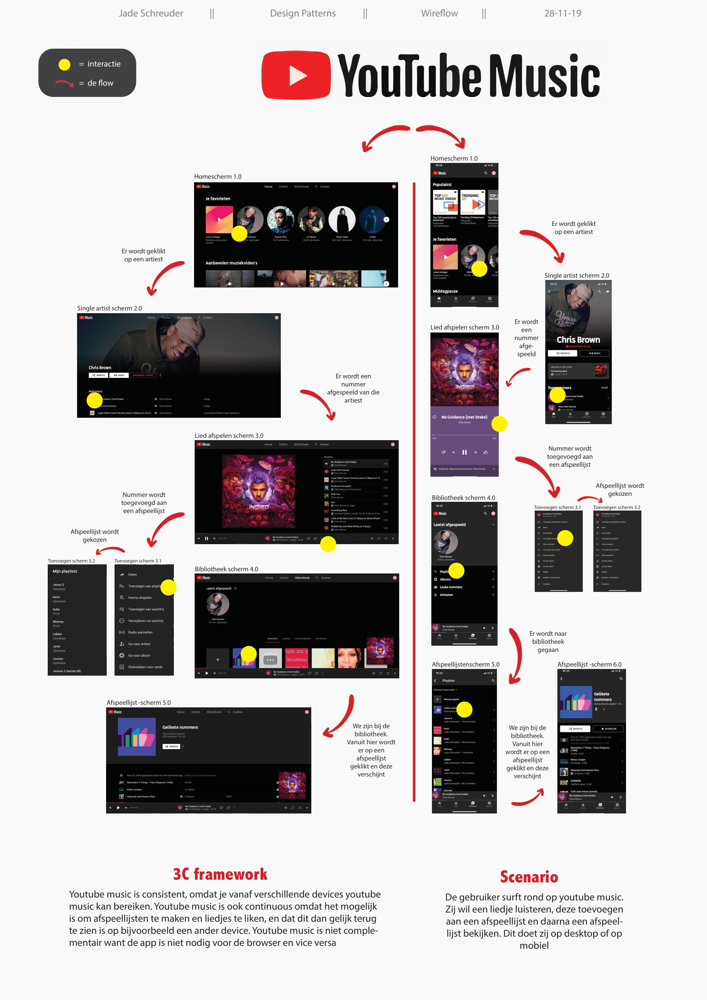

"Kom meer over mij te weten"

"Zie wat ik gemaakt heb"
"Neem contact op"
Over mij
Naam: Jade Schreuder
Leeftijd: 23 jaar
Mijn naam is Jade. Ik ben tweedejaars CMD, communication and multimedia design student aan de Hoge school van Amsterdam. Tijdens deze opleiding leer ik ontwerpen. Bij het ontwerpen van een multimedia component moet er rekening gehouden worden met verschillende aspecten. Vooral de UX en de UI, oftewel de user experience en de user interface, staan hierbij centraal. Op deze website is mijn werk te vinden en kan er ook contact met mij worden opgenomen voor eventuele vragen of boekingen.
Verder woon ik al meer dan drie jaar in amsterdam in het stadsdeel de Baarsjes. Ik hou erg van gezelligheid en afspreken met vriendinnen, je zult mij dus vaak kunnen vinden in de stad!
Mijn werk
Wireflow
Voor het vak design patterns in mijn tweede jaar kregen wij de opdracht om een wireflow te maken..
Poster
Voor het vak ucd kreeg ik de opdracht om een herontwerp te maken van de koffie automaten en dit te presenteren in een poster.
Wireflow
Voor het vak vormgeving 1 kreeg ik de opdracht om een onepager te maken voor een foodtruck

Wireflow
Voor het vak vormgeving 2 kreeg ik de opdracht om een verhaal in een bepaalde stijl vorm te geven.